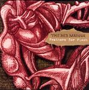

Home Artist links Label link

The Red Masque - Feathers For Flesh
| Artist: | The Red Masque |
| Title: | Feathers For Flesh |
| Label: | Big Balloon BBM1102 |
| Length(s): | 55 minutes |
| Year(s) of release: | 2004 |
| Month of review: | [01/2005] |
Line up
Kiarash Emami - guitars, mandolin, keys, vocals
Lynnette Shelley - vocals, erhu, psaltery, conundrum, pots, pans
Brandon Ross - bass, acoustic guitar, keys, vocals
Vonorn - drums, percussion, keys, theremin, electric guitar, bass, vocals
Tracks
| 1) | House Of Ash | 12.07
|
| 2) | Passage | 14.13
|
| 3) | Yellow Are His Opening Eyes | 14.48
|
| 4) | Beggars & Thieves | 9.38
|
| 5) | Scarlet Experiment | 3.46
|
Summary
The music
Feathers For Flesh displays an interesting brand of avant prog. Apparently this album is something of a musical story. The music has something of a theatrical, opera feel, in the same way you see with most Residents albums.
There are winds of Magma at times especially initially, when the music sounds at its most heavy. Over the tracks the most clear semblance would be The Residents. The music isn't as neurotic as that, though, at least not from the start. As the album progresses the feeling becomes lighter, more jumpy, and with that the semblance to The Residents becomes stronger. Beggars And Thieves is so light it has pretty much turned into a folk song. Just a little longer than you would expect, and with some odd sounds in between.
The closer Scarlet Experiment is on a par with Residents material with all the odd sounds, voices and neuroticism there.
Conclusion
Without wanting to state that Red Masque is simply a Residents rip off, I do see the same sort of things going on in their music. There is the neuroticism, the experiment ad nauseum, the complexity, the variation of instruments. But most of all that weird style transgressing the melodies. Definitely interesting music for a bit of study, but not necessarily to simply play. With that this album is interesting for Residents adepts.
© Roberto Lambooy